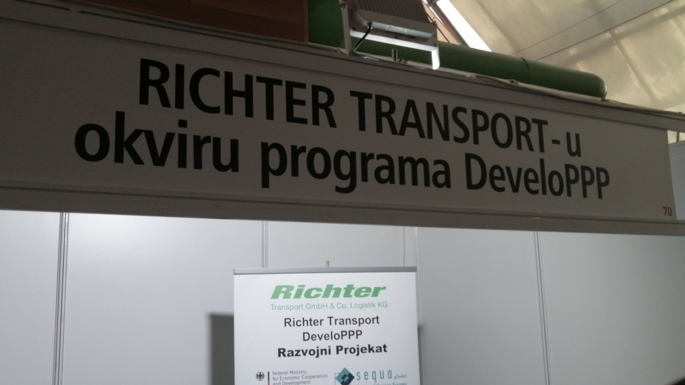
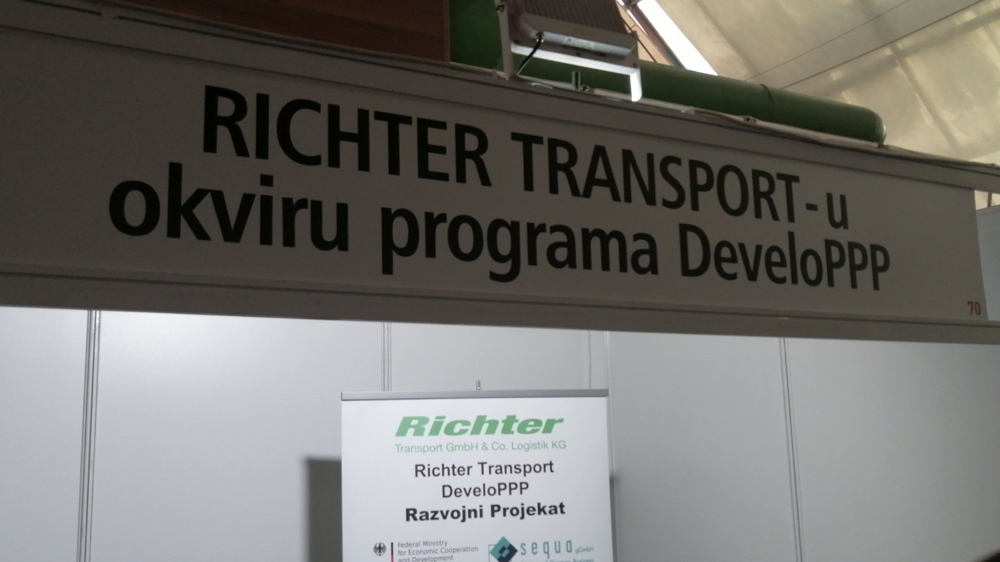
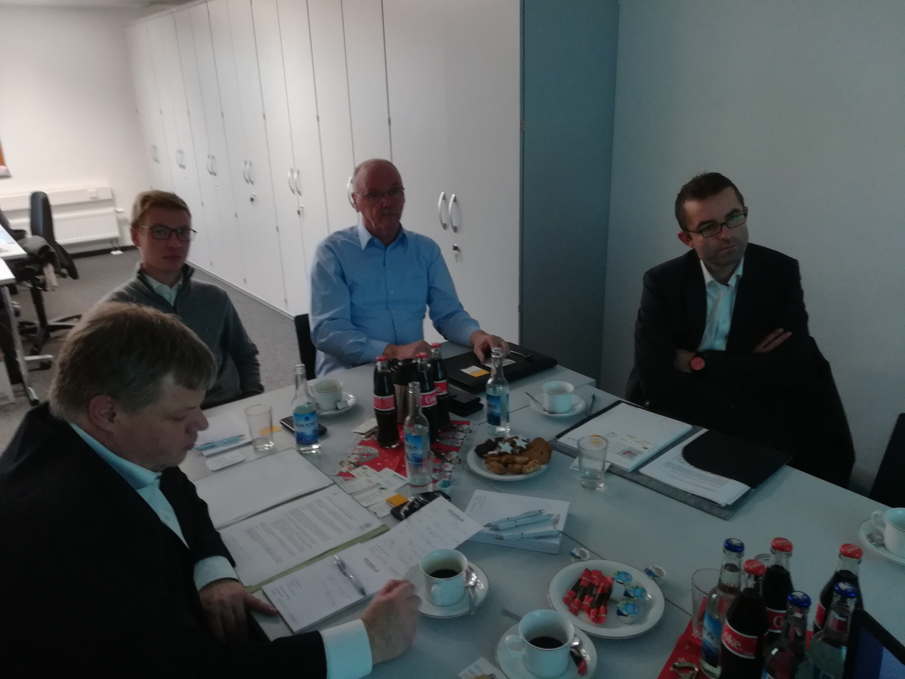
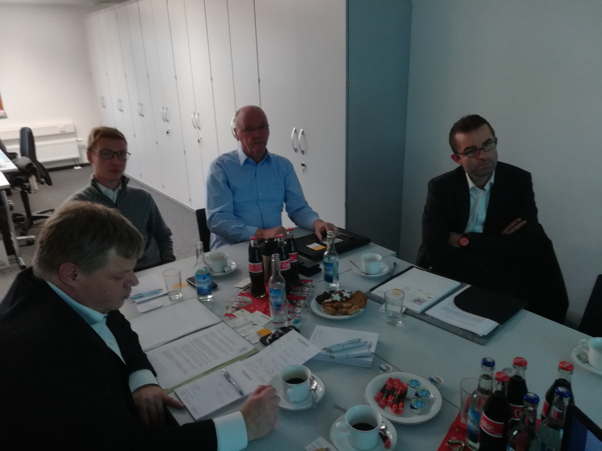

11/2020
PODRŠKA PROGRAMA DEVELOPPP RICHTER TRANSPORT U PREVENCIJI EPIDEMIJE KOVID-19
U okviru posebne humanitarne aktivnosti programa DeveloPPP Richter Transport u prevenciji epidemije Kovid-19, donirano je 1500 zaštitnih maski klubu penzionera beogradske opštine Vračar. Akciju je podržala i sama opština Vračar, sa ciljem podrške najstarijim sugrađanima u zaštiti zdravlja tokom pandemije Kovid-19, koja je značajno uticala na život i rad cele zajednice, a time i na aktivnosti ali i ulogu programa DeveloPPP Rihter Transport.


U okviru posebne humanitarne aktivnosti programa DeveloPPP Richter Transport u prevenciji epidemije Kovid-19, donirano je 1500 zaštitnih maski Zajednici saobraćajnih škola, nedobitnom udruženju osnovanom radi ostvarivanja ciljeva u oblasti srednjeg stručnog obrazovanja i vaspitanja i obrazovanja odraslih u području rada saobraćaj. Ovom donacijom koju je primio predsednik Zajednice g.Miroslav Macura, u zaštiti zdravlja tokom pandemije Kovid-19 podržani su učenici i nastavnici saobraćajnih škola članica Zajednice saobraćajnih škola.

14/06/2020
PROGRAM DEVELOPPP RICHTER TRANSPORT U MEDIJIMA
Aktivnosti programa DeveloPPP Richter Transport i u okviru njega osnovanog trening centra u Beogradu - Centar za obuku Richter transport, propraćeni su u domaćim medijima iz oblasti transporta.
Krajem prošle godine, u toku početne faze projekta i formiranja Centra za obuku Richter transport, program je predstavljen u specijalizovanom časopisu za teretna i građevinska vozila Veliki točkovi. Članak možete pogledati ovde.

U toku ove godine aktivnosti Centra za obuku Richter transport predstavljene su u više navrata i u specijalizovanom onlajn časopisu za teretna i građevinska vozila kamioni.net


Program DeveloPPP Richter Transport predstavljen je i u specijalizovanom izdanju Poslovnog udruženja međunarodni transport, zvaničnog saradnika projekta u Srbiji Programa DeveloPPP Richter Transport.

06/05/2020
PRILAGOĐAVANJE PROGRAMA USLOVIMA U TOKU EPIDEMIJE COVID-19
U Centru za Obuku – Trening Centar Richter Transport posle održanih prvih treninga na osnovu smernica projekta kreiranog u okviru programa DeveloPPP uspostavljenog od strane Sequa – neprofitne razvojne organizacije iz Nemačke i nemačkog transportnog preduzeća Richter Transport, radi se na reorganizaciji planiranog programa treninga u periodu od aprila do jula. Usled posledica izbijanja epidemije bolesti Covid-19 i onemogućenosti organizovanja klasičnih predavanja, treninga i prezentacija uz prisustvo polaznika, standardne forme treninga biće privremeno zamenjene onlajn prezentacijama i predavanjima, koje su u procesu osmišljavanja i pripreme. Kako se radi o specifičnim predavanjima sa stručnom tematikom i znatnim naglaskom na praktičnom treningu, onlajn prezentacije i predavanja biće prilagođena teoretskom delu nastavnog plana.
U očekivanju skore normalizacije uslova u vezi sa epidemijom bolesti Covid-19, na ovaj način će se u narednom periodu osigurati aktivnost Centra za Obuku – Trening centar Richter Transport na aktivnostima organizacije treninga i prezentacija. Dosadašnji treninzi održani su po posebno kreiranom nastavnom planu u okviru kojeg se na kursevima namenjenim vozačima kamiona predavala tematika – Swap sistem / Izmenjivi sistem transporta. Informacije u vezi sa treninzima po ovoj tematici i planovima za naredni period, kao i o projektu DeveloPPP u okviru kojeg je ovaj trening centar i osnovan, nalaze se na strani Centra za Obuku www.centarzaobuku.com

03/02/2020
ODRŽANI PRVI TRENINZI U TRENING CENTRU RICHTER TRANSPORT
U Centru za Obuku – Trening Centar Richter Transport održani su prvi pilot treninzi na osnovu smernica projekta kreiranog u okviru programa DeveloPPP uspostavljenog od strane Nemačkog ministarstva za razvoj i privrednu saradnju - BMZ i Sequa – neprofitne razvojne organizacije iz Nemačke, a čiji je nosilac nemačko transportno preduzeće Richter Transport.
Pilot treninzi održani su po posebno kreiranom nastavnom planu u okviru kojeg će se na kursevima namenjenim vozačima kamiona predavati tematika – Swap sistem / Izmenjivi sistem transporta, uz sledeće oblasti:
- Tehnologija izmenjivog kamionskog sistema transporta / Swap sistem – teorijska obuka i praktično savladavanje veština vožnje i manevrisanja, uz sve specifičnosti swap sistema.
- Bezbednost u vožnji Swap sistema i principi bezbednog prevoza robe.
- Principi kombinovanih vozila, vazdušne kočnice i procedura pregleda vozila sa specifičnostima za vozila Swap sistema izmenjivog transporta.
U toku februara i marta meseca uspostaviće se redovan raspored treninga po nastavnom planu Swap sistem / Izmenjivi sistem transporta, koji će u prvom rasporedu trajati do jula meseca. Treninzi su predviđeni da se odvijaju u prostorijama Centra za Obuku – Trening Centar Richter Transport u Bariču, kao i kod zainteresovanih drumskih transportnih preduzeća za interne grupne treninge zaposlenih. Trening centar je osnovan krajem prošle godine i namenjen je pre svega za obuku vozača kamiona, ali i polaznika iz ostalih srodnih delatnosti. Centar sadrži prostorije za održavanje nastave, prezentacija i dogadjaja iz oblasti drumskog transporta robe i spoljašnji prostor za održavanje praktične nastave u vozilu. Informacije u vezi sa treninzima po ovoj tematici i planovima za naredni period, kao i o projektu DeveloPPP u okviru kojeg je ovaj trening centar i osnovan, nalaze se na strani Centra za Obuku www.centarzaobuku.com
Navedeni projekat kreiran je u okviru programa DeveloPPP uspostavljenog od strane Nemačkog ministarstva za razvoj i privrednu saradnju - BMZ i Sequa – neprofitne razvojne organizacije iz Nemačke, a nosilac projekta je nemačko transportno preduzeće Richter Transport. Zvanični saradnik projekta u Srbiji je i Poslovno udruženje Međunarodni transport.

10/01/2020
OSNOVAN CENTAR ZA OBUKU - TRENING CENTAR RICHTER TRANSPORT
U Bariču pored Beograda osnovan je Centar za Obuku – Trening Centar Richter Transport, namenjen pre svega za obuku vozača kamiona, ali i polaznika iz ostalih srodnih delatnosti. Jedna od glavnih oblasti treninga u okviru Centra za Obuku biće obuka iz oblasti tehnologije izmenjivog kamionskog sistema transporta / Swap sistem. Centar sadrži prostorije za održavanje nastave, prezentacija i dogadjaja iz oblasti drumskog transporta robe i spoljašnji prostor za održavanje praktične nastave u vozilu. Za potrebe nastave Trening Centra Richter Transport, kreiran je posebno dizajniran nastavni plan u okviru kojeg će se na kursevima namenjenim vozačima kamiona predavati tematika nove tehnologije u Srbiji – Swap sistem / Izmenjivi sistem transporta, uz sledeće:
- Tehnologija izmenjivog kamionskog sistema transporta / Swap sistem – teorijska obuka i praktično savladavanje veština vožnje i manevrisanja, uz sve specifičnosti swap sistema.
- Bezbednost u vožnji Swap sistema i principi bezbednog prevoza robe.
- Principi kombinovanih vozila.
- Vazdušne kočnice i specifičnosti u vezi sa Swap sistemima.
- Pregled vozila, sa specifičnostima vozila Swap sistema izmenjivog transporta.
Uspostavljanje ovog trening centra čija je vizija da postane centralni trening centar za tehnologiju izmenjivog kamionskog sistema transporta u zemlji, ali i regionu, bazira se na jednom od ciljeva ovog DeveloPPP projekta, da se unaprede kapaciteti profesionalne nastave u transportu robe u drumskom saobraćaju u Srbiji, uz saradnju predavača iz ove oblasti iz Srbije i Nemačke i razmenu iskustava iz prakse.
Poseban aspekt projekta je i povećanje kapaciteta i znanja u sektoru transporta robe u Srbiji kroz poboljšanje i dodatni razvoj vokacionog treninga.
Navedeni projekat kreiran je inače u okviru programa DeveloPPP uspostavljenog od strane Nemačkog ministarstva za razvoj i privrednu saradnju - BMZ i Sequa – neprofitne razvojne organizacije iz Nemačke, a nosilac projekta je nemačko transportno preduzeće Richter Transport. Zvanični saradnik projekta u Srbiji je i Poslovno udruženje Međunarodni transport.

15/12/2019
GODIŠNJA SKUPŠTINA POSLOVNOG UDRUŽENJA "MEĐUNARODNI TRANSPORT"
U petak, 13.12.2019. godine održana je XIX Godišnja Skupština Poslovnog udruženja "Međunarodni Transport" i 16. po redu manifestacija TRUCK BUSSINESS FAIR. Ponovo se na jednom mestu okupio veliki broj učesnika sektora transporta iz zemlje i regiona, njihovi najznačajniji komercijalni partneri, kao i predstavnici javnog sektora. Naš tim je predstavljajući DeveloPPP projekat Richter Transport aktivno učestvovao na ovogodišnjoj tradicionalnoj manifestaciji, koja se pokazala kao relevantan skup za promociju ovakvog projekta koji predviđa kreiranje trening centra u Beogradu, razradu njegovog nastavnog plana i održavanje radionica iz oblasti sistemskog transporta i uticaja noćne vožnje.


 



10/12/2019
STUDIJSKA POSETA RICHTER TRANSPORTU U VEZELU, NEMAČKA
U prvoj sedmici decembra održana je studijska poseta kompaniji Richter Transport u Vezelu u Nemačkoj.Upoznavanje sa njihovim tehinčkim i poslovnim kapacitetima i razmena iskustava u edukaciji profesionalnih vozača. Poseban deo studijske posete Richter Transportu predstavljala je prezentacija tehnilogije Swap transportnog sistema. Održan je i zvaničan sastanak sa lokalnim udruženjem transportnih preduzeća VVWL na temu DeveloPPP projekta i potencijalne saradnje. Dodatni deo studijeke posete predstavljala je i poseta lokalnim transportnim preduzećima, kao i vozačkoj akademiji Šliske koja aktivno učestvuje u razvoju treninga profesionalnih vozača kamiona i vozila swap transportnih sistema. Na pomenutoj akademiji Šliske održana je i radionica na temu razvoja nastavnog plana u Srbiji, a koja je predvidjena u okviru ovog DeveloPPP projekta.


 



20/10/2019
PREZENTACIJA RICHTER TRANSPORT DEVELOPPP PROJEKTA I DISKUSIJA
U okviru programa DeveloPPP uspostavljenog od strane Nemačkog ministarstva za razvoj i privrednu saradnju - BMZ i Sequa – neprofitne razvojne organizacije iz Nemačke, održana je panel prezentacija i diskusija sa ciljem zvaničnog predstavljanja DeveloPPP projekta osnivanja trening centra za transport robe u drumskom sabraćaju u Srbiji. Nosilac projekta je nemačko transportno preduzeće Richter Transport sa svojim trening centrom u gradu Wesel u pokrajini Severna Rajna Vestfalija. Richter sa svojim nemačkim projektnim konzorcijumom u okviru projekta uspostavlja trening centra za transport robe u drumskom sabraćaju, uz uvođenje rešenja nemačkih standarda sistemskog transporta i povećanje kapaciteta i znanja u sektoru transporta robe u Srbiji kroz poboljšanje i dodatni razvoj vokacionog treninga. Cilj ovog projekta je unapređenje kapaciteta profesionalne nastave u transportu robe u drumskom saobraćaju u Srbiji, uz saradnju predavača iz ove oblasti iz Srbije i Nemačke i razmenu iskustava iz prakse. Projekat traje godinu dana i u predviđa kreiranje novog trening centra u Beogradu, razradu njegovog nastavnog plana, održavanje radionica iz oblasti sistemskog transporta i uticaja noćne vožnje, organizaciju studijskih putovanja, uspostavljanje pilot treninga i uticaj na stručnu nastavu u smislu poboljčanja kvaliteta kroz pozitivne primere iz prakse. Zvanični saradnik projekta u Srbiji je i Poslovno udruženje Međunarodni transport.


12/09/2019
Osnovan program DeveloPPP Ricther Transport
U okviru programa DeveloPPP uspostavljenog od strane Nemačkog ministarstva za razvoj i privrednu saradnju - BMZ i Sequa – neprofitne razvojne organizacije iz Nemačke, kreiran je projekat osnivanja trening centra za transport robe u drumskom sabraćaju u Srbiji. Nosilac projekta je nemačko transportno preduzeće Richter Transport sa svojim trening centrom u gradu Wesel u pokrajini Severna Rajna Vestfalija.
Richter Transport sa svojim nemačkim projektnim konzorcijumom u okviru projekta uspostavlja trening centar za transport robe u drumskom sabraćaju, uz uvođenje rešenja nemačkih standarda sistemskog transporta i povećanje kapaciteta i znanja u sektoru transporta robe u Srbiji kroz poboljšanje i dodatni razvoj vokacionog treninga.
Cilj ovog projekta je unapređenje kapaciteta profesionalne nastave u transportu robe u drumskom saobraćaju u Srbiji, uz saradnju predavača iz ove oblasti iz Srbije i Nemačke i razmenu iskustava iz prakse.
Projekat traje godinu dana i predviđa kreiranje novog trening centra u Beogradu, razradu njegovog nastavnog plana, održavanje radionica iz oblasti sistemskog transporta i uticaja noćne vožnje, organizaciju studijskih putovanja, uspostavljanje pilot treninga i uticaj na stručnu nastavu u smislu poboljšanja kvaliteta kroz pozitivne primere iz prakse. Zvanični saradnik projekta u Srbiji je i Poslovno udruženje Međunarodni transport.